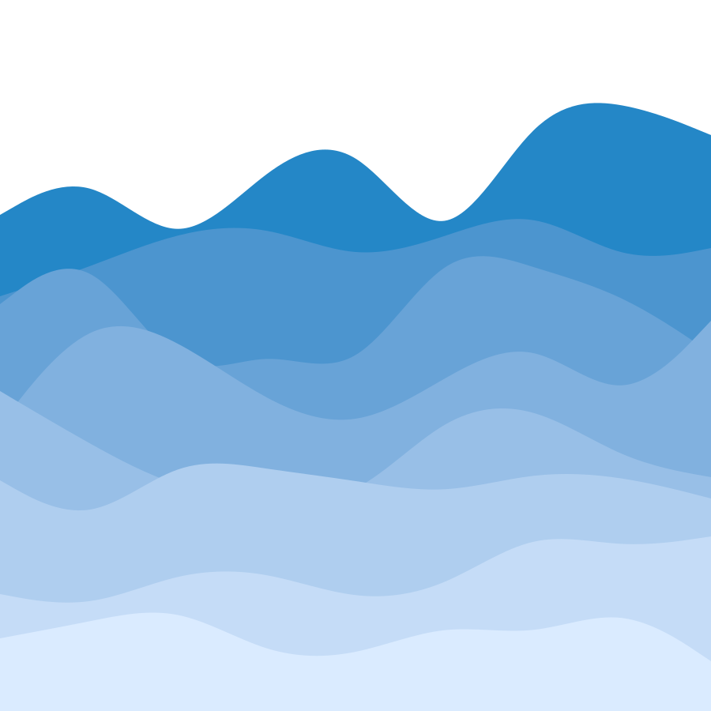
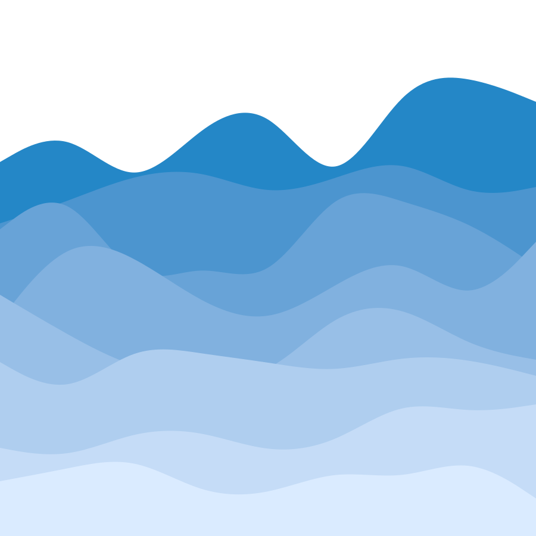

This will get you up to speed with any controversies or misconceptions in the community that you may not have heard before.
Autism Speaks is one of the largest Autism charities in the UK.
They have a huge budget, however, only 4% of their budget actually goes towards actually helping autistic people and their families with grants, whereas 22% is spent on fundraising.
Most of the leftover budget is spent trying to find a cure for autism. This is bad because instead of helping autistic people through grants, improving therapy and promoting acceptance, they promote hatred and aim to completely eradicate us.
In one of their marketing videos shown here they use the quote: “If you’re happily married, I will make sure that your marriage fails” to describe autistic children. This is disgusting and unacceptable.
It will not surprise you to hear that none of their board members are autistic.
The puzzle piece is the most common autistic symbol, though it is very problematic.
Some autistic people still identify with the puzzle piece symbol, but the majority don't anymore. The symbol was used without the input of autistic people and has been used to demonise us.
The primary colours make the symbol seem infantilising. As someone who has found out they were autistic later, you should understand how much older autistic people aren't paid attention to The main diagnostic criteria for Autism is based on traits in young boys, completely missing the different traits in girls or adults.
It is heavily associated with Autism Speaks and promotes the mentality that autistic people are incomplete and need a cure.
The Autism Spectrum is not a linear spectrum of not autistic to autistic.
You can't be 'a little bit autistic'.
The spectrum can more accurately modelled as a circular spectrum, like a colour wheel.
You may score very low on one aspect but high on others.
The terms "high-functioning" and "low-functioning" first appeared in research from the 1980s to distinguish between people who had autism and an intellectual disability. They are one-dimensional and don't describe an autistic person's needs.
Functioning labels don't tell the whole story. An autistic person may seem high functioning one day, and low functioning another. It's not accurate.
The circular spectrum model can help individuals understand and communicate the areas in which they struggle and need support with.
Aspergers was originally considered separate to Autism, but it is now known that it is the same and is no longer diagnosed.
Some people may still choose to identify with this if they were diagnosed with it, but at its core it is an offensive name to many, born from eugenics.
It was named after a Nazi sympathiser, Hans Asperger. Asperger recognized that some children displayed abnormal behavior and struggled socially but he also noted their strong cognitive and linguistic skills. He believed these children could be useful, whereas children with higher support needs were not. He sent these children to the Am Spiegelgrund clinic to be killed.
 
